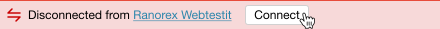

How to connect Ranorex Selocity with Ranorex Webtestit
In order to send an element selector directly from a web page to your Ranorex Webtestit project, you first need
to connect the app with Ranorex Selocity.
Make sure Ranorex Webtestit is running and that a Page Object file
is active.
Open the Chrome DevTools by pressing F12.
Find Ranorex Selocity on the right side of the Elements tab.
If not visible, reload the page or expand the DevTools window.
Click the 'Connect' button in the bottom of the Ranorex
Selocity tab.

On your web page, select the element you want to send to
Ranorex Webtestit.
Click the 'Send selector to Ranorex Webtestit' button next to
the selector of your choice. The selected element will be added to the active Page Object in Ranorex
Webtestit.